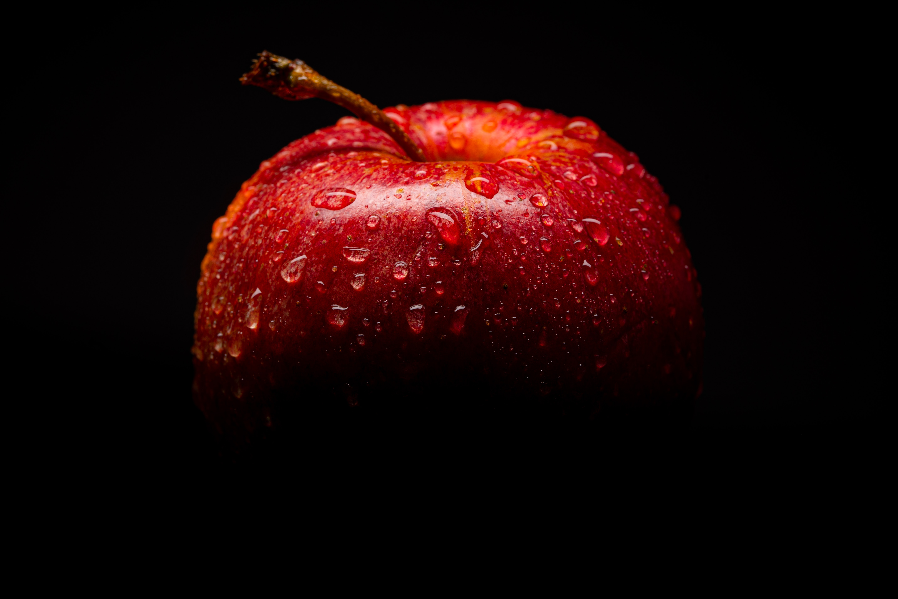
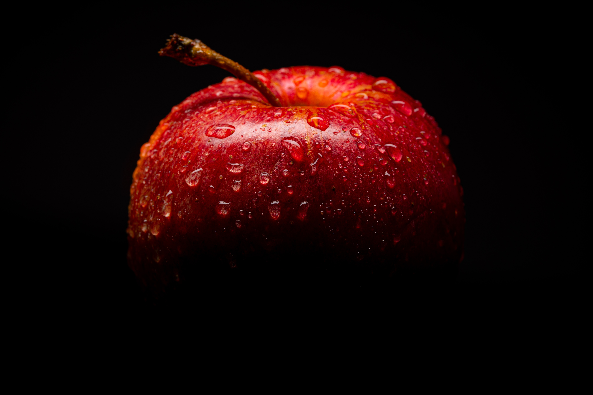

A fruit is a mature, ripened ovary, along with the contents of the ovary. The ovary is the ovule-bearing
reproductive structure in the plant flower.
The ovary serves to enclose and protect the ovules, from the youngest stages of flower development
until the ovules become fertilized and turn into seeds.
 

Apples are an incredibly nutritious fruit that offers multiple health benefits. They're rich in fiber and
antioxidants.
Eating them is linked to a lower risk of many chronic conditions, including diabetes, heart
disease, and cancer.
Apples may also promote weight loss and improve gut and brain health.
a tropical usually large ovoid or oblong fruit with a firm yellowish-red skin, hard central stone, and juicy aromatic pulp also : an evergreen tree (Mangifera indica) of the cashew family that bears mangoes.